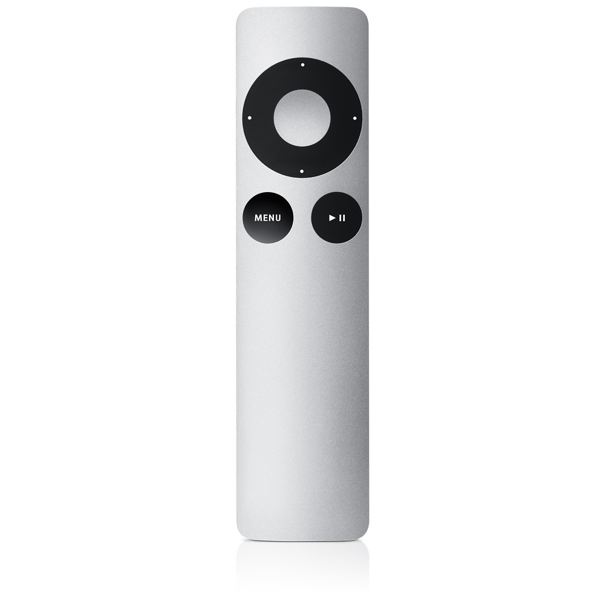
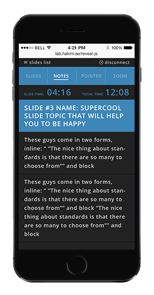

Привет, What The Hack
Контрол для презентаций на riveal.js
Презентации вещь крутая
А презентация на js в бразуре вдвойне
Т.к. если делать презентацию о js, то можно сразу показыва рабочие примеры
И чтобы было круче, нужен пульт!!!

Тадамм!!!

- ES6(2015) - Babel - Webpack - React - React Router - Express - WebSockets
Reveal.js
The HTML Presentation Framework
Created by
Hakim El Hattab
/
@hakimel